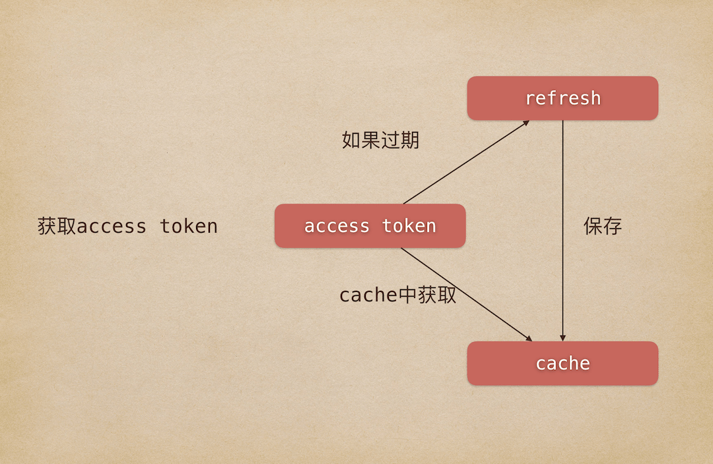

<!DOCTYPE html>
<html>
<head>
    <meta charset="utf-8">
    
    <title>微信公众号开发之上传图片（附AccessToken获取和处理） | tomfriwel&#39;s blog</title>
    
    <meta name="viewport" content="width=device-width, initial-scale=1, maximum-scale=1">
    
        <meta name="keywords" content="微信小程序,前端" />
    
    <meta name="description" content="最近看卡券功能的时候，创建卡券的时候涉及到上传图片的操作，但官方文档里面描述似乎有一点问题，在这里做一个记录。AccessToken的获取和处理放后面。 开发语言用的是PHP 7.0，使用CodeIgniter框架。 官方文档：上传卡券图片素材 上传图片请求地址说明：1HTTP请求方式: POST/FROMURL:https://api.weixin.qq.com/cgi-bin/media/up">
<meta name="keywords" content="微信小程序,前端">
<meta property="og:type" content="article">
<meta property="og:title" content="微信公众号开发之上传图片（附AccessToken获取和处理）">
<meta property="og:url" content="https://tomfriwel.github.io/blog/2018/11/08/WeChat-Official-Account-Development-Upload-Image/index.html">
<meta property="og:site_name" content="tomfriwel&#39;s blog">
<meta property="og:description" content="最近看卡券功能的时候，创建卡券的时候涉及到上传图片的操作，但官方文档里面描述似乎有一点问题，在这里做一个记录。AccessToken的获取和处理放后面。 开发语言用的是PHP 7.0，使用CodeIgniter框架。 官方文档：上传卡券图片素材 上传图片请求地址说明：1HTTP请求方式: POST/FROMURL:https://api.weixin.qq.com/cgi-bin/media/up">
<meta property="og:locale" content="zh-CN">
<meta property="og:image" content="https://tomfriwel.github.io/blog/assets/images/official-account/cover.png">
<meta property="og:updated_time" content="2018-11-08T06:14:33.310Z">
<meta name="twitter:card" content="summary">
<meta name="twitter:title" content="微信公众号开发之上传图片（附AccessToken获取和处理）">
<meta name="twitter:description" content="最近看卡券功能的时候，创建卡券的时候涉及到上传图片的操作，但官方文档里面描述似乎有一点问题，在这里做一个记录。AccessToken的获取和处理放后面。 开发语言用的是PHP 7.0，使用CodeIgniter框架。 官方文档：上传卡券图片素材 上传图片请求地址说明：1HTTP请求方式: POST/FROMURL:https://api.weixin.qq.com/cgi-bin/media/up">
<meta name="twitter:image" content="https://tomfriwel.github.io/blog/assets/images/official-account/cover.png">
    

    

    

    <link rel="stylesheet" href="/blog/libs/font-awesome/css/font-awesome.min.css">
    <link rel="stylesheet" href="/blog/libs/titillium-web/styles.css">
    <link rel="stylesheet" href="/blog/libs/source-code-pro/styles.css">

    <link rel="stylesheet" href="/blog/css/style.css">

    <script src="/blog/libs/jquery/2.0.3/jquery.min.js"></script>
    
    
        <link rel="stylesheet" href="/blog/libs/lightgallery/css/lightgallery.min.css">
    
    
        <link rel="stylesheet" href="/blog/libs/justified-gallery/justifiedGallery.min.css">
    
    
    


</head>

<body>
    <div id="wrap">
        <header id="header">
    <div id="header-outer" class="outer">
        <div class="container">
            <div class="container-inner">
                <div id="header-title">
                    <h1 class="logo-wrap">
                        <a href="/blog/" class="logo"></a>
                    </h1>
                    
                </div>
                <div id="header-inner" class="nav-container">
                    <a id="main-nav-toggle" class="nav-icon fa fa-bars"></a>
                    <div class="nav-container-inner">
                        <ul id="main-nav">
                            
                                <li class="main-nav-list-item" >
                                    <a class="main-nav-list-link" href="/blog/">主页</a>
                                </li>
                            
                                        
                                    
                                <li class="main-nav-list-item" >
                                    <a class="main-nav-list-link" href="/blog/about/index.html">关于</a>
                                </li>
                            
                        </ul>
                        <nav id="sub-nav">
                            <div id="search-form-wrap">

    <form class="search-form">
        <input type="text" class="ins-search-input search-form-input" placeholder="搜索" />
        <button type="submit" class="search-form-submit"></button>
    </form>
    <div class="ins-search">
    <div class="ins-search-mask"></div>
    <div class="ins-search-container">
        <div class="ins-input-wrapper">
            <input type="text" class="ins-search-input" placeholder="想要查找什么..." />
            <span class="ins-close ins-selectable"><i class="fa fa-times-circle"></i></span>
        </div>
        <div class="ins-section-wrapper">
            <div class="ins-section-container"></div>
        </div>
    </div>
</div>
<script>
(function (window) {
    var INSIGHT_CONFIG = {
        TRANSLATION: {
            POSTS: '文章',
            PAGES: '页面',
            CATEGORIES: '分类',
            TAGS: '标签',
            UNTITLED: '(未命名)',
        },
        ROOT_URL: '/blog/',
        CONTENT_URL: '/blog/content.json',
    };
    window.INSIGHT_CONFIG = INSIGHT_CONFIG;
})(window);
</script>
<script src="/blog/js/insight.js"></script>

</div>
                        </nav>
                    </div>
                </div>
            </div>
        </div>
    </div>
</header>
        <div class="container">
            <div class="main-body container-inner">
                <div class="main-body-inner">
                    <section id="main">
                        <div class="main-body-header">
    <h1 class="header">
    
    未分类
    </h1>
</div>
                        <div class="main-body-content">
                            <article id="post-WeChat-Official-Account-Development-Upload-Image" class="article article-single article-type-post" itemscope itemprop="blogPost">
    <div class="article-inner">
        
            <header class="article-header">
                
    
        <h1 class="article-title" itemprop="name">
        微信公众号开发之上传图片（附AccessToken获取和处理）
        </h1>
    

            </header>
        
        
            <div class="article-meta">
                
    <div class="article-date">
        <a href="/blog/2018/11/08/WeChat-Official-Account-Development-Upload-Image/" class="article-date">
            <time datetime="2018-11-08T03:28:33.000Z" itemprop="datePublished">2018-11-08</time>
        </a>
    </div>

                
    <div class="article-tag">
        <i class="fa fa-tag"></i>
        <a class="tag-link" href="/blog/tags/前端/">前端</a>, <a class="tag-link" href="/blog/tags/微信小程序/">微信小程序</a>
    </div>

            </div>
        
        
        <div class="article-entry" itemprop="articleBody">
            <p>最近看卡券功能的时候，创建卡券的时候涉及到上传图片的操作，但官方文档里面描述似乎有一点问题，在这里做一个记录。<code>AccessToken</code>的获取和处理放后面。</p>
<p>开发语言用的是<code>PHP 7.0</code>，使用<code>CodeIgniter</code>框架。</p>
<p><a href="https://mp.weixin.qq.com/wiki?t=resource/res_main&amp;id=mp1451025056" target="_blank" rel="noopener">官方文档：上传卡券图片素材</a></p>
<h4 id="上传图片"><a href="#上传图片" class="headerlink" title="上传图片"></a>上传图片</h4><p>请求地址说明：<br><figure class="highlight plain"><table><tr><td class="gutter"><pre><span class="line">1</span><br></pre></td><td class="code"><pre><span class="line">HTTP请求方式: POST/FROMURL:https://api.weixin.qq.com/cgi-bin/media/uploadimg?access_token=ACCESS_TOKEN</span><br></pre></td></tr></table></figure></p>
<p>文档里参数是<code>buffer</code>和<code>access_token</code>，但实际测试下来是不行的，后来网上搜索和查看素材管理相关信息后，发现需要参数为<code>media</code>、<code>access_token</code>和<code>type</code>。</p>
<p>代码如下：</p>
<figure class="highlight php"><table><tr><td class="gutter"><pre><span class="line">1</span><br><span class="line">2</span><br><span class="line">3</span><br><span class="line">4</span><br><span class="line">5</span><br><span class="line">6</span><br><span class="line">7</span><br><span class="line">8</span><br><span class="line">9</span><br><span class="line">10</span><br><span class="line">11</span><br><span class="line">12</span><br><span class="line">13</span><br><span class="line">14</span><br><span class="line">15</span><br><span class="line">16</span><br><span class="line">17</span><br><span class="line">18</span><br><span class="line">19</span><br><span class="line">20</span><br><span class="line">21</span><br><span class="line">22</span><br><span class="line">23</span><br></pre></td><td class="code"><pre><span class="line"><span class="comment">// access_token和type参数</span></span><br><span class="line">$params = [];</span><br><span class="line"></span><br><span class="line"><span class="comment">// getAccessToken获取access_token的函数，如何获取查看官方文档</span></span><br><span class="line">$params[<span class="string">'access_token'</span>] = <span class="keyword">$this</span>-&gt;getAccessToken();</span><br><span class="line">$params[<span class="string">'type'</span>] = <span class="string">"image"</span>;</span><br><span class="line">$url = <span class="string">"https://api.weixin.qq.com/cgi-bin/media/uploadimg"</span>;</span><br><span class="line"></span><br><span class="line"><span class="comment">// 拼接后为 url?access_token=xxx&amp;type=image</span></span><br><span class="line">$url = $url.<span class="string">'?'</span>.http_build_query($params);</span><br><span class="line"></span><br><span class="line"><span class="comment">// 相对于网站的图片的绝对路径</span></span><br><span class="line">$filename = <span class="string">"/path/sample.png"</span>;</span><br><span class="line"></span><br><span class="line"><span class="comment">// 图片在服务器上的真是路径，如果是前端上传的，可以另行获取，这里使用的是网站上的图片作为测试</span></span><br><span class="line">$real_path = $_SERVER[<span class="string">'DOCUMENT_ROOT'</span>].$filename;</span><br><span class="line"></span><br><span class="line"><span class="comment">// 图片data</span></span><br><span class="line">$file_data = <span class="keyword">array</span>(<span class="string">"media"</span>=&gt; <span class="keyword">new</span> \CURLFile($real_path));</span><br><span class="line"></span><br><span class="line"><span class="comment">// 发送请求</span></span><br><span class="line">$res = <span class="keyword">$this</span>-&gt;post($url, $file_data, <span class="keyword">false</span>);</span><br><span class="line">var_dump($res);</span><br></pre></td></tr></table></figure>
<p>如果不出错最后返回的信息为：<br><figure class="highlight plain"><table><tr><td class="gutter"><pre><span class="line">1</span><br><span class="line">2</span><br><span class="line">3</span><br><span class="line">4</span><br></pre></td><td class="code"><pre><span class="line">array(1) &#123;</span><br><span class="line">  [&quot;url&quot;]=&gt;</span><br><span class="line">  string(125) &quot;xxxxx&quot;</span><br><span class="line">&#125;</span><br></pre></td></tr></table></figure></p>
<p>post函数：<br><figure class="highlight php"><table><tr><td class="gutter"><pre><span class="line">1</span><br><span class="line">2</span><br><span class="line">3</span><br><span class="line">4</span><br><span class="line">5</span><br><span class="line">6</span><br><span class="line">7</span><br><span class="line">8</span><br><span class="line">9</span><br><span class="line">10</span><br><span class="line">11</span><br><span class="line">12</span><br><span class="line">13</span><br><span class="line">14</span><br><span class="line">15</span><br><span class="line">16</span><br><span class="line">17</span><br><span class="line">18</span><br><span class="line">19</span><br><span class="line">20</span><br><span class="line">21</span><br><span class="line">22</span><br><span class="line">23</span><br><span class="line">24</span><br><span class="line">25</span><br><span class="line">26</span><br><span class="line">27</span><br><span class="line">28</span><br><span class="line">29</span><br><span class="line">30</span><br><span class="line">31</span><br><span class="line">32</span><br><span class="line">33</span><br><span class="line">34</span><br></pre></td><td class="code"><pre><span class="line"><span class="keyword">private</span> <span class="function"><span class="keyword">function</span> <span class="title">post</span><span class="params">($url, $data = [], $json_encode=true)</span> </span>&#123;</span><br><span class="line">    $curl = curl_init(); <span class="comment">// 启动一个CURL会话</span></span><br><span class="line">    curl_setopt($curl, CURLOPT_URL, $url); <span class="comment">// 要访问的地址</span></span><br><span class="line">    curl_setopt($curl, CURLOPT_SSL_VERIFYPEER, <span class="keyword">false</span>); <span class="comment">// 对认证证书来源的检查</span></span><br><span class="line">    curl_setopt($curl, CURLOPT_SSL_VERIFYHOST, <span class="keyword">false</span>); <span class="comment">// 从证书中检查SSL加密算法是否存在</span></span><br><span class="line">    curl_setopt($curl, CURLOPT_USERAGENT, $_SERVER[<span class="string">'HTTP_USER_AGENT'</span>]); <span class="comment">// 模拟用户使用的浏览器</span></span><br><span class="line">    <span class="keyword">if</span> ($data != <span class="keyword">null</span>) &#123;</span><br><span class="line">        curl_setopt($curl, CURLOPT_POST, <span class="number">1</span>); <span class="comment">// 发送一个常规的Post请求</span></span><br><span class="line">        <span class="comment">// curl_setopt($curl, CURLOPT_POSTFIELDS, $data); // Post提交的数据包</span></span><br><span class="line">        <span class="keyword">if</span>(gettype($data)===<span class="string">"string"</span>) &#123;</span><br><span class="line">            curl_setopt($curl, CURLOPT_POSTFIELDS, $data);</span><br><span class="line">        &#125;</span><br><span class="line">        <span class="keyword">else</span> &#123;</span><br><span class="line">            <span class="keyword">if</span> ($json_encode) &#123;</span><br><span class="line">                curl_setopt($curl, CURLOPT_POSTFIELDS, json_encode($data, JSON_UNESCAPED_UNICODE));</span><br><span class="line">            &#125; <span class="keyword">else</span> &#123;</span><br><span class="line">                curl_setopt($curl, CURLOPT_POSTFIELDS, $data);</span><br><span class="line">            &#125;</span><br><span class="line">        &#125;</span><br><span class="line">    &#125;</span><br><span class="line">    curl_setopt($curl, CURLOPT_TIMEOUT, <span class="number">300</span>); <span class="comment">// 设置超时限制防止死循环</span></span><br><span class="line">    curl_setopt($curl, CURLOPT_HEADER, <span class="number">0</span>); <span class="comment">// 显示返回的Header区域内容</span></span><br><span class="line">    curl_setopt($curl, CURLOPT_RETURNTRANSFER, <span class="number">1</span>); <span class="comment">// 获取的信息以文件流的形式返回</span></span><br><span class="line">    $res = curl_exec($curl); <span class="comment">// 执行操作</span></span><br><span class="line">    curl_close($curl);</span><br><span class="line"></span><br><span class="line">    $data = json_decode($res, <span class="keyword">true</span>);</span><br><span class="line">    <span class="keyword">if</span>($data==<span class="keyword">NULL</span>) &#123;</span><br><span class="line">        <span class="keyword">return</span> $res;</span><br><span class="line">    &#125;</span><br><span class="line">    <span class="keyword">else</span> &#123;</span><br><span class="line">        <span class="keyword">return</span> $data;</span><br><span class="line">    &#125;</span><br><span class="line">&#125;</span><br></pre></td></tr></table></figure></p>
<p><code>json_encode</code>为<code>false</code>的话，就不会进行<code>json_encode</code>。比如上面上传图片传入的是一个<code>CURLFile</code>，如果<code>json_encode</code>就会上传失败。</p>
<h4 id="AccessToken的获取和处理"><a href="#AccessToken的获取和处理" class="headerlink" title="AccessToken的获取和处理"></a><code>AccessToken</code>的获取和处理</h4><p><a href="https://mp.weixin.qq.com/wiki?t=resource/res_main&amp;id=mp1421140183" target="_blank" rel="noopener">官方文档：获取access_token</a></p>
<p>官方文档中建议建立一个刷新机制，不要每次使用<code>access_token</code>的时候都去重新获取，详情请仔细阅读官方文档。</p>
<p>请求地址说明：<br><figure class="highlight plain"><table><tr><td class="gutter"><pre><span class="line">1</span><br><span class="line">2</span><br></pre></td><td class="code"><pre><span class="line">https请求方式: GET</span><br><span class="line">https://api.weixin.qq.com/cgi-bin/token?grant_type=client_credential&amp;appid=APPID&amp;secret=APPSECRET</span><br></pre></td></tr></table></figure></p>
<p>参数为<code>grant_type</code>、<code>appid</code>和<code>secret</code>，具体信息可查看官方文档。</p>
<p></p>
<p>代码：<br>设置<code>cache</code>和相关信息：<br><figure class="highlight php"><table><tr><td class="gutter"><pre><span class="line">1</span><br><span class="line">2</span><br><span class="line">3</span><br><span class="line">4</span><br><span class="line">5</span><br><span class="line">6</span><br><span class="line">7</span><br><span class="line">8</span><br><span class="line">9</span><br><span class="line">10</span><br><span class="line">11</span><br><span class="line">12</span><br></pre></td><td class="code"><pre><span class="line"><span class="keyword">public</span> <span class="function"><span class="keyword">function</span> <span class="title">__construct</span><span class="params">()</span> </span>&#123;</span><br><span class="line">    <span class="keyword">parent</span>::__construct();</span><br><span class="line">    </span><br><span class="line">    <span class="keyword">$this</span>-&gt;load-&gt;driver(</span><br><span class="line">        <span class="string">'cache'</span>,</span><br><span class="line">        <span class="keyword">array</span>(<span class="string">'adapter'</span> =&gt; <span class="string">'apc'</span>, <span class="string">'backup'</span> =&gt; <span class="string">'file'</span>, <span class="string">'key_prefix'</span> =&gt; <span class="string">'wechat_'</span>)</span><br><span class="line">    );</span><br><span class="line"></span><br><span class="line">    <span class="comment">// 公众号appid 和 appsecrect</span></span><br><span class="line">    <span class="keyword">$this</span>-&gt;appid = <span class="string">'xxx'</span>;</span><br><span class="line">    <span class="keyword">$this</span>-&gt;secret = <span class="string">'xxx'</span>;</span><br><span class="line">&#125;</span><br></pre></td></tr></table></figure></p>
<p>获取accessToken：<br><figure class="highlight php"><table><tr><td class="gutter"><pre><span class="line">1</span><br><span class="line">2</span><br><span class="line">3</span><br><span class="line">4</span><br><span class="line">5</span><br><span class="line">6</span><br><span class="line">7</span><br><span class="line">8</span><br><span class="line">9</span><br><span class="line">10</span><br><span class="line">11</span><br><span class="line">12</span><br><span class="line">13</span><br><span class="line">14</span><br><span class="line">15</span><br><span class="line">16</span><br><span class="line">17</span><br><span class="line">18</span><br><span class="line">19</span><br><span class="line">20</span><br><span class="line">21</span><br><span class="line">22</span><br></pre></td><td class="code"><pre><span class="line"><span class="keyword">private</span> <span class="function"><span class="keyword">function</span> <span class="title">getAccessToken</span><span class="params">()</span> </span>&#123;</span><br><span class="line">    $appid = <span class="keyword">$this</span>-&gt;appid;</span><br><span class="line">    $secret = <span class="keyword">$this</span>-&gt;secret;</span><br><span class="line"></span><br><span class="line">    <span class="comment">// 设置cache key，这里是 wechat_[appid]_access_token，保存成功可以到/webpath/application/cache查看</span></span><br><span class="line">    <span class="comment">// 如果想用其他方式保存也可以做相应更改</span></span><br><span class="line">    $key = <span class="keyword">$this</span>-&gt;appid.<span class="string">'_access_token'</span>;</span><br><span class="line"></span><br><span class="line">    <span class="comment">// 如果cache中没有accessToken或者已过期，重新获取或刷新</span></span><br><span class="line">    <span class="keyword">if</span> (!$accessToken = <span class="keyword">$this</span>-&gt;cache-&gt;get($key)) &#123;</span><br><span class="line">        $url = <span class="string">"https://api.weixin.qq.com/cgi-bin/token?grant_type=client_credential&amp;appid=&#123;$appid&#125;&amp;secret=&#123;$secret&#125;"</span>;</span><br><span class="line"></span><br><span class="line">        $res = <span class="keyword">$this</span>-&gt;post($url);</span><br><span class="line"></span><br><span class="line">        $accessToken = $res[<span class="string">'access_token'</span>];</span><br><span class="line"></span><br><span class="line">        <span class="comment">// 保存accessToken</span></span><br><span class="line">        <span class="keyword">$this</span>-&gt;cache-&gt;save($key, $accessToken, $res[<span class="string">'expires_in'</span>]);</span><br><span class="line">    &#125;</span><br><span class="line"></span><br><span class="line">    <span class="keyword">return</span> $accessToken;</span><br><span class="line">&#125;</span><br></pre></td></tr></table></figure></p>
<h4 id="参考"><a href="#参考" class="headerlink" title="参考"></a>参考</h4><ul>
<li><a href="https://mp.weixin.qq.com/wiki?t=resource/res_main&amp;id=mp1451025056" target="_blank" rel="noopener">官方文档：上传卡券图片素材</a></li>
<li><a href="https://mp.weixin.qq.com/wiki?t=resource/res_main&amp;id=mp1421140183" target="_blank" rel="noopener">官方文档：获取access_token</a></li>
<li><a href="https://blog.csdn.net/lei8308/article/details/79505260?utm_source=blogxgwz0" target="_blank" rel="noopener">PHP通过CURL上传图片（微信公众号上传素材）</a></li>
</ul>

        </div>
        <i style="color:#AAAAAA;">声明：转载请注明作者及原文链接</i>
        <footer class="article-footer">
            


    <a data-url="https://tomfriwel.github.io/blog/2018/11/08/WeChat-Official-Account-Development-Upload-Image/" data-id="ck99kw63r00452hwh897l5yir" class="article-share-link"><i class="fa fa-share"></i>分享到</a>
<script>
    (function ($) {
        $('body').on('click', function() {
            $('.article-share-box.on').removeClass('on');
        }).on('click', '.article-share-link', function(e) {
            e.stopPropagation();

            var $this = $(this),
                url = $this.attr('data-url'),
                encodedUrl = encodeURIComponent(url),
                id = 'article-share-box-' + $this.attr('data-id'),
                offset = $this.offset(),
                box;

            if ($('#' + id).length) {
                box = $('#' + id);

                if (box.hasClass('on')){
                    box.removeClass('on');
                    return;
                }
            } else {
                var html = [
                    '<div id="' + id + '" class="article-share-box">',
                        '<input class="article-share-input" value="' + url + '">',
                        '<div class="article-share-links">',
                            '<a href="https://twitter.com/intent/tweet?url=' + encodedUrl + '" class="article-share-twitter" target="_blank" title="Twitter"></a>',
                            '<a href="https://www.facebook.com/sharer.php?u=' + encodedUrl + '" class="article-share-facebook" target="_blank" title="Facebook"></a>',
                            '<a href="http://pinterest.com/pin/create/button/?url=' + encodedUrl + '" class="article-share-pinterest" target="_blank" title="Pinterest"></a>',
                            '<a href="https://plus.google.com/share?url=' + encodedUrl + '" class="article-share-google" target="_blank" title="Google+"></a>',
                        '</div>',
                    '</div>'
                ].join('');

              box = $(html);

              $('body').append(box);
            }

            $('.article-share-box.on').hide();

            box.css({
                top: offset.top + 25,
                left: offset.left
            }).addClass('on');

        }).on('click', '.article-share-box', function (e) {
            e.stopPropagation();
        }).on('click', '.article-share-box-input', function () {
            $(this).select();
        }).on('click', '.article-share-box-link', function (e) {
            e.preventDefault();
            e.stopPropagation();

            window.open(this.href, 'article-share-box-window-' + Date.now(), 'width=500,height=450');
        });
    })(jQuery);
</script>

        </footer>
    </div>
    
    
    
<div id="gitalk-container"></div>
<!-- <link rel="stylesheet" href="//unpkg.com/gitalk/dist/gitalk.css">
<script src="//unpkg.com/gitalk/dist/gitalk.min.js"></script> -->
<link rel="stylesheet" href="https://unpkg.com/gitalk/dist/gitalk.css">
<script src="https://unpkg.com/gitalk/dist/gitalk.min.js"></script>
<script type="text/javascript" src="/blog/assets/js/md5.js"></script>


<script type="text/javascript">
    (function() {
        var language = navigator.language || navigator.userLanguage;
        var path = location.pathname || 'unknown'
        var id = md5(path);
        var title = '[blog]' + (document.title || 'unknown')

        var gitalk = new Gitalk({
            clientID: 'd1eb7e13bdea94d4be23',
            clientSecret: '91cb6a1282bfd6e8225ee6d1c4b2743f621063ec',
            repo: 'blog',
            owner: 'tomfriwel',
            admin: ['tomfriwel'],
            id: id,
            labels: ['blog-comments'],
            title: title,
            distractionFreeMode: false,
            language: language
        });
        gitalk.render('gitalk-container');
    })();
</script>


    
    <section id="comments">
    
        
<div id="gitalk-container"></div>
<!-- <link rel="stylesheet" href="//unpkg.com/gitalk/dist/gitalk.css">
<script src="//unpkg.com/gitalk/dist/gitalk.min.js"></script> -->
<link rel="stylesheet" href="https://unpkg.com/gitalk/dist/gitalk.css">
<script src="https://unpkg.com/gitalk/dist/gitalk.min.js"></script>
<script type="text/javascript" src="/blog/assets/js/md5.js"></script>

    

    
    </section>


</article>
                        </div>
                    </section>
                    <aside id="sidebar">
    <a class="sidebar-toggle" title="Expand Sidebar"><i class="toggle icon"></i></a>
    <div class="sidebar-top">
        <p>关注我 :</p>
        <ul class="social-links">
            
                
                <li>
                    <a class="social-tooltip" title="twitter" href="https://twitter.com/tomfriwel" target="_blank">
                        <i class="icon fa fa-twitter"></i>
                    </a>
                </li>
                
            
                
                <li>
                    <a class="social-tooltip" title="github" href="https://github.com/tomfriwel" target="_blank">
                        <i class="icon fa fa-github"></i>
                    </a>
                </li>
                
            
                
                <li>
                    <a class="social-tooltip" title="weibo" href="https://www.weibo.com/tomfriwel" target="_blank">
                        <i class="icon fa fa-weibo"></i>
                    </a>
                </li>
                
            
        </ul>
    </div>
    
        
<nav id="article-nav">
    
        <a href="/blog/2018/11/14/learn-linear-algebra-by-programming-5/" id="article-nav-newer" class="article-nav-link-wrap">
        <strong class="article-nav-caption">下一篇</strong>
        <p class="article-nav-title">
        
            通过编程来学习线性代数5-克拉默法则
        
        </p>
        <i class="icon fa fa-chevron-right" id="icon-chevron-right"></i>
    </a>
    
    
        <a href="/blog/2018/10/14/learn-linear-algebra-by-programming-4/" id="article-nav-older" class="article-nav-link-wrap">
        <strong class="article-nav-caption">上一篇</strong>
        <p class="article-nav-title">通过编程来学习线性代数4-行列式按行(列)展开</p>
        <i class="icon fa fa-chevron-left" id="icon-chevron-left"></i>
        </a>
    
</nav>

    
    <div class="widgets-container">
        
            
                
    <div class="widget-wrap">
        <h3 class="widget-title">最新文章</h3>
        <div class="widget">
            <ul id="recent-post" class="">
                
                    <li>
                        
                        <div class="item-thumbnail">
                            <a href="/blog/2019/02/21/2019-02-21-wechat-miniapp-fullscreen-mode/" class="thumbnail">
    
    
        <span style="background-image:url(/blog/2019/02/21/2019-02-21-wechat-miniapp-fullscreen-mode/2.png)" alt="微信小程序全屏模式（自定义导航栏）" class="thumbnail-image"></span>
    
    <!--  -->
</a>

                        </div>
                        
                        <div class="item-inner">
                            <p class="item-category"></p>
                            <p class="item-title"><a href="/blog/2019/02/21/2019-02-21-wechat-miniapp-fullscreen-mode/" class="title">微信小程序全屏模式（自定义导航栏）</a></p>
                            <p class="item-date"><time datetime="2019-02-21T08:59:53.000Z" itemprop="datePublished">2019-02-21</time></p>
                        </div>
                    </li>
                
                    <li>
                        
                        <div class="item-thumbnail">
                            <a href="/blog/2018/11/14/learn-linear-algebra-by-programming-5/" class="thumbnail">
    
    
        <span style="background-image:url(/blog/assets/images/linear-algebra/cover.png)" alt="通过编程来学习线性代数5-克拉默法则" class="thumbnail-image"></span>
    
    <!--  -->
</a>

                        </div>
                        
                        <div class="item-inner">
                            <p class="item-category"></p>
                            <p class="item-title"><a href="/blog/2018/11/14/learn-linear-algebra-by-programming-5/" class="title">通过编程来学习线性代数5-克拉默法则</a></p>
                            <p class="item-date"><time datetime="2018-11-14T14:31:00.000Z" itemprop="datePublished">2018-11-14</time></p>
                        </div>
                    </li>
                
                    <li>
                        
                        <div class="item-thumbnail">
                            <a href="/blog/2018/11/08/WeChat-Official-Account-Development-Upload-Image/" class="thumbnail">
    
    
        <span style="background-image:url(/blog/assets/images/official-account/cover.png)" alt="微信公众号开发之上传图片（附AccessToken获取和处理）" class="thumbnail-image"></span>
    
    <!--  -->
</a>

                        </div>
                        
                        <div class="item-inner">
                            <p class="item-category"></p>
                            <p class="item-title"><a href="/blog/2018/11/08/WeChat-Official-Account-Development-Upload-Image/" class="title">微信公众号开发之上传图片（附AccessToken获取和处理）</a></p>
                            <p class="item-date"><time datetime="2018-11-08T03:28:33.000Z" itemprop="datePublished">2018-11-08</time></p>
                        </div>
                    </li>
                
                    <li>
                        
                        <div class="item-thumbnail">
                            <a href="/blog/2018/10/14/learn-linear-algebra-by-programming-4/" class="thumbnail">
    
    
        <span style="background-image:url(/blog/assets/images/linear-algebra/cover.png)" alt="通过编程来学习线性代数4-行列式按行(列)展开" class="thumbnail-image"></span>
    
    <!--  -->
</a>

                        </div>
                        
                        <div class="item-inner">
                            <p class="item-category"></p>
                            <p class="item-title"><a href="/blog/2018/10/14/learn-linear-algebra-by-programming-4/" class="title">通过编程来学习线性代数4-行列式按行(列)展开</a></p>
                            <p class="item-date"><time datetime="2018-10-14T09:59:17.000Z" itemprop="datePublished">2018-10-14</time></p>
                        </div>
                    </li>
                
                    <li>
                        
                        <div class="item-thumbnail">
                            <a href="/blog/2018/09/30/Translation-Unusual-View-Angle/" class="thumbnail">
    
    
        <span class="thumbnail-image thumbnail-none"></span>
    
    <!--  -->
</a>

                        </div>
                        
                        <div class="item-inner">
                            <p class="item-category"></p>
                            <p class="item-title"><a href="/blog/2018/09/30/Translation-Unusual-View-Angle/" class="title">[翻译]不同寻常的拍摄角度(更新中)</a></p>
                            <p class="item-date"><time datetime="2018-09-30T05:44:12.000Z" itemprop="datePublished">2018-09-30</time></p>
                        </div>
                    </li>
                
            </ul>
        </div>
    </div>

            
                

            
                
    <div class="widget-wrap widget-list">
        <h3 class="widget-title">归档</h3>
        <div class="widget">
            <ul class="archive-list"><li class="archive-list-item"><a class="archive-list-link" href="/blog/archives/2019/02/">二月 2019</a><span class="archive-list-count">1</span></li><li class="archive-list-item"><a class="archive-list-link" href="/blog/archives/2018/11/">十一月 2018</a><span class="archive-list-count">2</span></li><li class="archive-list-item"><a class="archive-list-link" href="/blog/archives/2018/10/">十月 2018</a><span class="archive-list-count">1</span></li><li class="archive-list-item"><a class="archive-list-link" href="/blog/archives/2018/09/">九月 2018</a><span class="archive-list-count">6</span></li><li class="archive-list-item"><a class="archive-list-link" href="/blog/archives/2018/08/">八月 2018</a><span class="archive-list-count">6</span></li><li class="archive-list-item"><a class="archive-list-link" href="/blog/archives/2018/07/">七月 2018</a><span class="archive-list-count">1</span></li><li class="archive-list-item"><a class="archive-list-link" href="/blog/archives/2018/06/">六月 2018</a><span class="archive-list-count">8</span></li><li class="archive-list-item"><a class="archive-list-link" href="/blog/archives/2018/05/">五月 2018</a><span class="archive-list-count">5</span></li><li class="archive-list-item"><a class="archive-list-link" href="/blog/archives/2018/04/">四月 2018</a><span class="archive-list-count">3</span></li><li class="archive-list-item"><a class="archive-list-link" href="/blog/archives/2018/03/">三月 2018</a><span class="archive-list-count">5</span></li><li class="archive-list-item"><a class="archive-list-link" href="/blog/archives/2018/01/">一月 2018</a><span class="archive-list-count">2</span></li><li class="archive-list-item"><a class="archive-list-link" href="/blog/archives/2017/12/">十二月 2017</a><span class="archive-list-count">1</span></li></ul>
        </div>
    </div>


            
                
    <div class="widget-wrap widget-list">
        <h3 class="widget-title">标签</h3>
        <div class="widget">
            <ul class="tag-list"><li class="tag-list-item"><a class="tag-list-link" href="/blog/tags/Apache/">Apache</a><span class="tag-list-count">2</span></li><li class="tag-list-item"><a class="tag-list-link" href="/blog/tags/Art/">Art</a><span class="tag-list-count">1</span></li><li class="tag-list-item"><a class="tag-list-link" href="/blog/tags/Drawing/">Drawing</a><span class="tag-list-count">1</span></li><li class="tag-list-item"><a class="tag-list-link" href="/blog/tags/Game/">Game</a><span class="tag-list-count">1</span></li><li class="tag-list-item"><a class="tag-list-link" href="/blog/tags/Github/">Github</a><span class="tag-list-count">1</span></li><li class="tag-list-item"><a class="tag-list-link" href="/blog/tags/Mysql/">Mysql</a><span class="tag-list-count">1</span></li><li class="tag-list-item"><a class="tag-list-link" href="/blog/tags/Painting/">Painting</a><span class="tag-list-count">1</span></li><li class="tag-list-item"><a class="tag-list-link" href="/blog/tags/Python/">Python</a><span class="tag-list-count">2</span></li><li class="tag-list-item"><a class="tag-list-link" href="/blog/tags/Research/">Research</a><span class="tag-list-count">1</span></li><li class="tag-list-item"><a class="tag-list-link" href="/blog/tags/Router/">Router</a><span class="tag-list-count">1</span></li><li class="tag-list-item"><a class="tag-list-link" href="/blog/tags/Ubuntu/">Ubuntu</a><span class="tag-list-count">2</span></li><li class="tag-list-item"><a class="tag-list-link" href="/blog/tags/Vue/">Vue</a><span class="tag-list-count">2</span></li><li class="tag-list-item"><a class="tag-list-link" href="/blog/tags/canvas/">canvas</a><span class="tag-list-count">1</span></li><li class="tag-list-item"><a class="tag-list-link" href="/blog/tags/iOS/">iOS</a><span class="tag-list-count">1</span></li><li class="tag-list-item"><a class="tag-list-link" href="/blog/tags/image-recognition/">image recognition</a><span class="tag-list-count">1</span></li><li class="tag-list-item"><a class="tag-list-link" href="/blog/tags/machine-learning/">machine learning</a><span class="tag-list-count">1</span></li><li class="tag-list-item"><a class="tag-list-link" href="/blog/tags/webpy/">webpy</a><span class="tag-list-count">1</span></li><li class="tag-list-item"><a class="tag-list-link" href="/blog/tags/前端/">前端</a><span class="tag-list-count">4</span></li><li class="tag-list-item"><a class="tag-list-link" href="/blog/tags/后端/">后端</a><span class="tag-list-count">1</span></li><li class="tag-list-item"><a class="tag-list-link" href="/blog/tags/基础知识/">基础知识</a><span class="tag-list-count">5</span></li><li class="tag-list-item"><a class="tag-list-link" href="/blog/tags/开源项目/">开源项目</a><span class="tag-list-count">3</span></li><li class="tag-list-item"><a class="tag-list-link" href="/blog/tags/微信小程序/">微信小程序</a><span class="tag-list-count">9</span></li><li class="tag-list-item"><a class="tag-list-link" href="/blog/tags/微信开发/">微信开发</a><span class="tag-list-count">1</span></li><li class="tag-list-item"><a class="tag-list-link" href="/blog/tags/思考/">思考</a><span class="tag-list-count">6</span></li><li class="tag-list-item"><a class="tag-list-link" href="/blog/tags/摄影/">摄影</a><span class="tag-list-count">2</span></li><li class="tag-list-item"><a class="tag-list-link" href="/blog/tags/构图/">构图</a><span class="tag-list-count">2</span></li><li class="tag-list-item"><a class="tag-list-link" href="/blog/tags/滤镜/">滤镜</a><span class="tag-list-count">1</span></li><li class="tag-list-item"><a class="tag-list-link" href="/blog/tags/电影/">电影</a><span class="tag-list-count">1</span></li><li class="tag-list-item"><a class="tag-list-link" href="/blog/tags/目标/">目标</a><span class="tag-list-count">1</span></li><li class="tag-list-item"><a class="tag-list-link" href="/blog/tags/线性代数/">线性代数</a><span class="tag-list-count">5</span></li><li class="tag-list-item"><a class="tag-list-link" href="/blog/tags/练习/">练习</a><span class="tag-list-count">4</span></li><li class="tag-list-item"><a class="tag-list-link" href="/blog/tags/绘画/">绘画</a><span class="tag-list-count">5</span></li><li class="tag-list-item"><a class="tag-list-link" href="/blog/tags/翻译/">翻译</a><span class="tag-list-count">2</span></li><li class="tag-list-item"><a class="tag-list-link" href="/blog/tags/记录/">记录</a><span class="tag-list-count">5</span></li><li class="tag-list-item"><a class="tag-list-link" href="/blog/tags/阅读/">阅读</a><span class="tag-list-count">3</span></li><li class="tag-list-item"><a class="tag-list-link" href="/blog/tags/阅读笔记/">阅读笔记</a><span class="tag-list-count">2</span></li></ul>
        </div>
    </div>


            
                
    <div class="widget-wrap widget-float">
        <h3 class="widget-title">标签云</h3>
        <div class="widget tagcloud">
            <a href="/blog/tags/Apache/" style="font-size: 11.67px;">Apache</a> <a href="/blog/tags/Art/" style="font-size: 10px;">Art</a> <a href="/blog/tags/Drawing/" style="font-size: 10px;">Drawing</a> <a href="/blog/tags/Game/" style="font-size: 10px;">Game</a> <a href="/blog/tags/Github/" style="font-size: 10px;">Github</a> <a href="/blog/tags/Mysql/" style="font-size: 10px;">Mysql</a> <a href="/blog/tags/Painting/" style="font-size: 10px;">Painting</a> <a href="/blog/tags/Python/" style="font-size: 11.67px;">Python</a> <a href="/blog/tags/Research/" style="font-size: 10px;">Research</a> <a href="/blog/tags/Router/" style="font-size: 10px;">Router</a> <a href="/blog/tags/Ubuntu/" style="font-size: 11.67px;">Ubuntu</a> <a href="/blog/tags/Vue/" style="font-size: 11.67px;">Vue</a> <a href="/blog/tags/canvas/" style="font-size: 10px;">canvas</a> <a href="/blog/tags/iOS/" style="font-size: 10px;">iOS</a> <a href="/blog/tags/image-recognition/" style="font-size: 10px;">image recognition</a> <a href="/blog/tags/machine-learning/" style="font-size: 10px;">machine learning</a> <a href="/blog/tags/webpy/" style="font-size: 10px;">webpy</a> <a href="/blog/tags/前端/" style="font-size: 15px;">前端</a> <a href="/blog/tags/后端/" style="font-size: 10px;">后端</a> <a href="/blog/tags/基础知识/" style="font-size: 16.67px;">基础知识</a> <a href="/blog/tags/开源项目/" style="font-size: 13.33px;">开源项目</a> <a href="/blog/tags/微信小程序/" style="font-size: 20px;">微信小程序</a> <a href="/blog/tags/微信开发/" style="font-size: 10px;">微信开发</a> <a href="/blog/tags/思考/" style="font-size: 18.33px;">思考</a> <a href="/blog/tags/摄影/" style="font-size: 11.67px;">摄影</a> <a href="/blog/tags/构图/" style="font-size: 11.67px;">构图</a> <a href="/blog/tags/滤镜/" style="font-size: 10px;">滤镜</a> <a href="/blog/tags/电影/" style="font-size: 10px;">电影</a> <a href="/blog/tags/目标/" style="font-size: 10px;">目标</a> <a href="/blog/tags/线性代数/" style="font-size: 16.67px;">线性代数</a> <a href="/blog/tags/练习/" style="font-size: 15px;">练习</a> <a href="/blog/tags/绘画/" style="font-size: 16.67px;">绘画</a> <a href="/blog/tags/翻译/" style="font-size: 11.67px;">翻译</a> <a href="/blog/tags/记录/" style="font-size: 16.67px;">记录</a> <a href="/blog/tags/阅读/" style="font-size: 13.33px;">阅读</a> <a href="/blog/tags/阅读笔记/" style="font-size: 11.67px;">阅读笔记</a>
        </div>
    </div>


            
                
    <div class="widget-wrap widget-list">
        <h3 class="widget-title">链接</h3>
        <div class="widget">
            <ul>
                
                    <li>
                        <a href="https://www.tomfriwel.com">tomfriwel</a>
                    </li>
                
            </ul>
        </div>
    </div>


            
        
    </div>
</aside>
                </div>
            </div>
        </div>
        <footer id="footer">
    <div class="container">
        <div class="container-inner">
            <a id="back-to-top" href="javascript:;"><i class="icon fa fa-angle-up"></i></a>
            <div class="credit">
                <h1 class="logo-wrap">
                    <a href="/blog/" class="logo"></a>
                </h1>
                <p>&copy; 2020 tomfriwel</p>
                <p>Powered by <a href="//hexo.io/" target="_blank">Hexo</a>. Theme by <a href="//github.com/ppoffice" target="_blank">PPOffice</a></p>
            </div>
        </div>
    </div>
</footer>
        
    
        <script src="/blog/libs/lightgallery/js/lightgallery.min.js"></script>
        <script src="/blog/libs/lightgallery/js/lg-thumbnail.min.js"></script>
        <script src="/blog/libs/lightgallery/js/lg-pager.min.js"></script>
        <script src="/blog/libs/lightgallery/js/lg-autoplay.min.js"></script>
        <script src="/blog/libs/lightgallery/js/lg-fullscreen.min.js"></script>
        <script src="/blog/libs/lightgallery/js/lg-zoom.min.js"></script>
        <script src="/blog/libs/lightgallery/js/lg-hash.min.js"></script>
        <script src="/blog/libs/lightgallery/js/lg-share.min.js"></script>
        <script src="/blog/libs/lightgallery/js/lg-video.min.js"></script>
    
    
        <script src="/blog/libs/justified-gallery/jquery.justifiedGallery.min.js"></script>
    
    


<!-- Custom Scripts -->
<script src="/blog/js/main.js"></script>

    </div>
</body>
</html>
